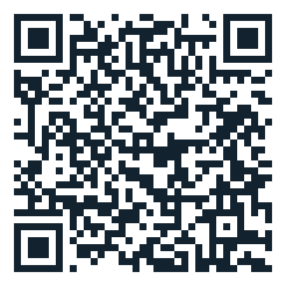

JOIN THE LIVE WORKSHOP
Content Creation for Beginners goes live on
Join the live workshop
Content Creation for Beginners goes live on
Sunday, 20 September at 12 PM IST
Bookmark this page. The join button appears right here when we open the room on Sunday, 20 September — and this address never changes, so it is the only link you need to keep.
0Days
00Hrs
00Mins
00Secs
Your join link arrives here on Sunday, 20 September.
We also send it in the WhatsApp group and to the email you registered with, shortly before we start — so you have it three ways. Until then there is nothing to do but keep this page.
Or scan this with your phone camera

Can't get in on the day? Message us on WhatsApp at +91 8700105418.
Add it to your calendar: download the .ics